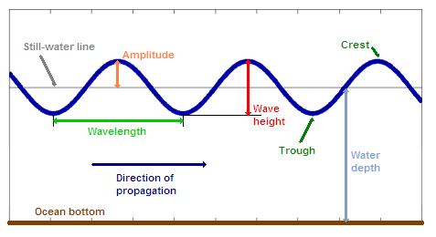

by Maxime Albouy
Engineering school students at SeaTech -
Intern at NTNU
Supervised by Henrique Murilo Gaspar - April to June 2024
This work was carried out during a 3-month internship at NTNU University in Ålesund. It
allows you to visualize the height of different types of waves (wind and swell) from crest
to trough.
I drew graphs representing a Wind Rose indicating the direction of the waves as well as
their height. These charts can be
displayed monthly as well as daily using a date picker. Knowing that the values are taken
once every hour per day, therefore 24/day. Wind roses use the
direction and height of the combined wind and swell waves.
To use this page, I invite you to enter a file with wave data or use the table named "WavesData.csv" here.
entered.
Import Dataset
Wave Amplitude:
Still waterline (m): The water level without waves, measured from the surface.
Amplitude (m): Half the vertical distance between the trough and crest of a wave.
Wave length (m): The horizontal distance between two successive crests or two successive troughs of a wave.
Wave height (m): The vertical distance between the crest and trough of a wave.
Trough : The lowest point of a wave.
Crest : The highest point of a wave.
Direction of propagation (° or Cardinal Directions): The direction in which the wave is moving.
Water depth (m): The vertical distance between the water surface and the seabed at a particular location

Explanation of Wave Height in the Nearshore Marine Forecast [1]
North (N): From 0 to 22.5 degrees and from 337.5 to 360 degrees.
Northeast (NE): From 22.5 to 67.5 degrees.
East (E): From 67.5 to 112.5 degrees.
Southeast (SE): From 112.5 to 157.5 degrees.
South (S): From 157.5 to 202.5 degrees.
Southwest (SW): From 202.5 to 247.5 degrees.
West (W) From 247.5 to 292.5 degrees.
Northwest (NW): From 292.5 to 337.5 degrees.
Explanation of Wave Rose directions [2]